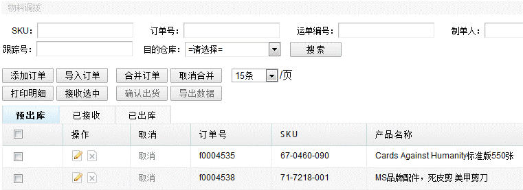
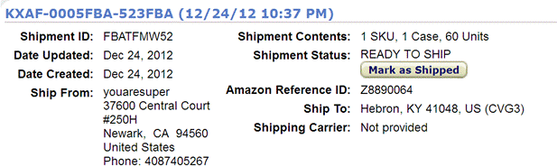
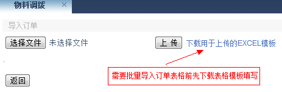
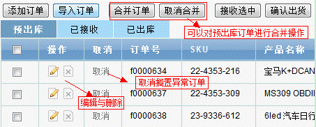
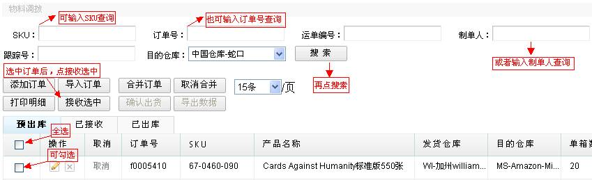
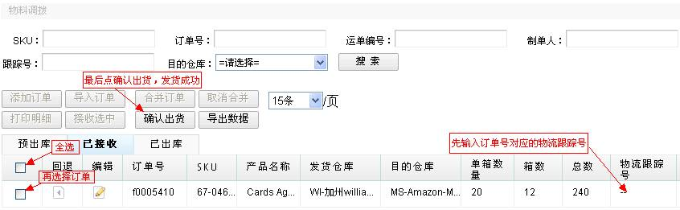
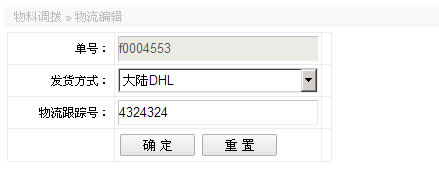
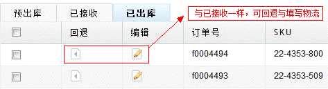

物料调拨
物料调拨是产品转仓的操作，将产品从一个仓库转到另外一个仓库，该操作页面与销售下单有比较多相同的地方。

1、预出库，与销售下单一样，预出库是显示刚下的订单，订单添加可以通过手工录入与导入订单表格，转仓的订单表格有表格模板可供下载，销售人员同样可以进行订单的合并与取消，编辑与删除(只能操作本人的记录)，物流人员可进行接收操作。 接收操作需要配置权限，权限同上。
下面详述添加订单，在亚马逊卖家后台创建shipment。

打开ERP订单管理中的物料调拨，点击添加订单，手动添加订单与销售下单相似，填写完数据后点击检测按钮检测数据的正确性与库存，无误则显示保存按钮供保存，注意的是，填写完单箱数量与箱数后，总数量是系统自动计算出来的，但是有时候，不一定每一箱数量都一样。所以单箱数量与箱数是供参考的，严格要求准确的是总数量，另外按照创建的shipment，输入数据，如下图：

与销售下单一样，物料调拨的同样可以批量导入订单，下载模板表格，按表头对应填写好内容即可上传。

导入与添加的订单会显示在预出库，销售可以对订单进行合并与取消合并，可以取消搁置异常订单，可以修改与删除。

以下是物流的相关操作，如勾选订单记录，进行接收，接收后订单会转至已接收状态。

2、已接收，该状态中的订单可以回退与编辑，都属于物流人员的操作，回退操作会将订单回退至预出库状态，编辑不是订单的编辑，而是填写运费，物流跟踪号等信息，如果订单的产品已经发出去了，物流人员需要进行确认出库，订单将转至已出库状态，供仓管做入库。

3、待发货，该状态订单可以回退，编辑操作可以填写物流追踪号和物流方式。

在待发货的状态，列表显示运费预估，是根据目的国家，发货方式，sku的重量，数量，来计算运费。
4、已出库，表示此转仓流程的出仓业务流程已完成，等待接收仓的仓管人员做入库，“已出库”中同样可以编辑物流信息，同“已接收”状态的编辑。

在已出库状态，列表显示预估运费和反写运费，预估运费同上待发货状态，反写运费是根据订单号对应的sku，每个sku的实重和体积重的所占总计的比例，
乘以每个物流追踪号对应的运费，每个sku进行分摊得到。
最后附上物料调拨权限分配说明：